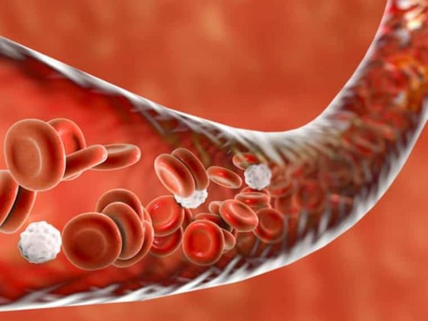

Características de los vasos sanguíneos para transplantes

Características de los vasos sanguíneos para transplantes | |
| Los vasos sanguíneos deben estar en buen estado y libres de defectos estructurales significativos, como lesiones, obstrucciones o aneurismas. Es esencial que los vasos sanguíneos del donante sean compatibles con el sistema inmunológico del receptor para evitar rechazos. Los vasos sanguíneos utilizados para trasplantes deben estar esterilizados para prevenir infecciones, deben tener un diámetro y longitud apropiados para adaptarse al sitio receptor y asegurar una conexión adecuada con los vasos existentes, de igual manera deben estar funcionales y ser capaces de transportar sangre de manera eficiente. | |